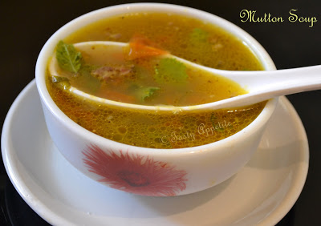

Chicken Soup

Ingredients
- Chicken pieces - 200 g
- Onion - 1
- Tomato - 1
- Ginger garlic paste - ½ tbsp
- Black pepper pwd - 1 tsp
- Turmeric pwd - a pinch
- Soya sauce - 1 tbsp
- Green chilly sauce - ½ tbsp
- Vinegar - ½ tbsp
- Corn flour - 2 tbsp
- Fresh Coriander leaves
- Salt to taste
DIRECTIONS
Put chicken pieces, onion pieces, tomato pieces, ginger garlic paste, black pepper pwd and turmeric pwd in a pressure pan.
Add 3 cups of water and allow to boil.
After 1 whistle reduce the flame.
Let it cook for about 20 mins, until the chicken pieces completely cooked and turns tender.
Once the pressure goes off, smash the contents.
Add soya sauce, salt, green chilly sauce and vinegar.
Take some chicken stock, just enough to mix the corn flour.
Slowly add this to the soup and stir continuously.
Cook on high for two minutes and remove from flame.